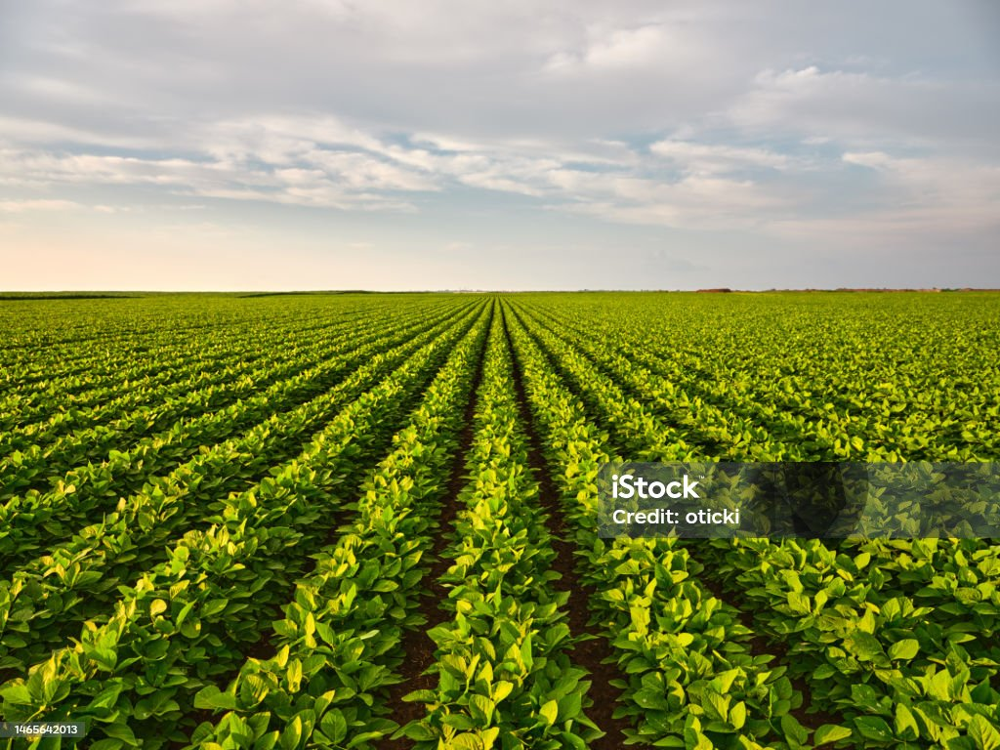
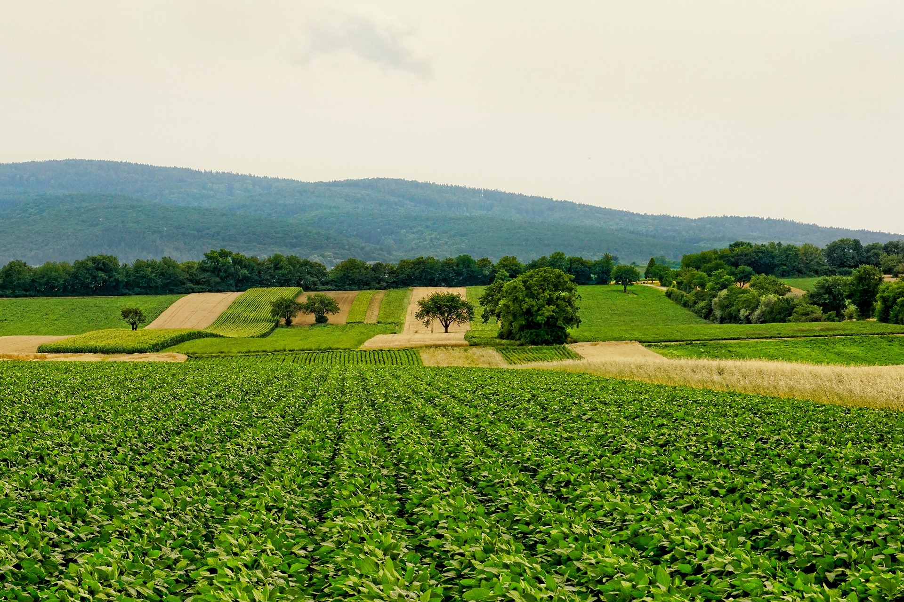

Important Agriculture Topics List
- Introduction to Agriculture
- Types of Agriculture
- Agricultural Crops
- Soil and Soil Types
- Soil Fertility and Management
- Irrigation and Water Management
- Seeds and Seed Selection
- Manures and Fertilizers
- Crop Production
- Crop Protection
- Pests and Diseases
- Organic Farming
- Sustainable Agriculture
- Modern Agriculture
- Agricultural Machinery
- Horticulture
- Animal Husbandry
- Dairy Farming
- Poultry Farming
- Fisheries
- Forestry
- Agricultural Technology
- Artificial Intelligence in Agriculture
- Role of Agriculture in the Indian Economy


Go to Home Page